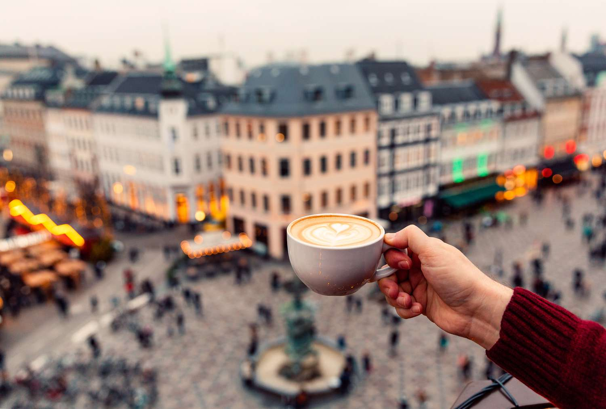

Ciudades del mundo para amantes del café
Viajar es descubrir nuevos paisajes, sonidos y sabores. Para muchos de nosotros, el sabor que define un destino es el de su café. Hay ciudades en el mundo donde la cultura del café es tan profunda y vibrante que se convierten en verdaderos lugares de peregrinación. No se trata solo de la calidad del grano, sino del ritual, la atmósfera y la historia que rodea cada taza. A continuación, exploramos algunas de estas capitales cafeteras.
Melbourne, Australia: La Meca del Café de Especialidad
Si hay una ciudad que puede reclamar el título de capital mundial del café de especialidad, esa es Melbourne. Aquí, el café no es una moda, es una obsesión. La cultura fue impulsada por inmigrantes italianos y griegos después de la Segunda Guerra Mundial, pero ha evolucionado hacia una escena increíblemente sofisticada. Los baristas son tratados como estrellas de rock y la competencia entre cafeterías asegura un estándar de calidad altísimo.
Explorá los famosos *laneways* (callejones) del centro de la ciudad para encontrar joyas ocultas. En Melbourne se perfeccionó el "flat white" y se valora la experimentación, desde el *cold drip* hasta infusiones complejas. Visitar lugares como St. Ali o Seven Seeds es una clase magistral sobre el potencial del café.
Viena, Austria: Elegancia y Tradición
La cultura de las cafeterías vienesas (*Kaffeehauskultur*) es tan importante que fue declarada Patrimonio Cultural Inmaterial por la UNESCO. Entrar en una cafetería vienesa es como viajar a una época de esplendor imperial. Con sus interiores opulentos, sillas de terciopelo, camareros de esmoquin y periódicos disponibles en perchas de madera, estos lugares son considerados "salas de estar públicas".
Aquí el tiempo se detiene. Se espera que los clientes se queden durante horas con una sola taza de café, que siempre se sirve en una bandeja de plata con un vaso de agua. No dejes de probar un *Wiener Melange* (similar a un capuchino) en lugares históricos como el Café Central, donde alguna vez debatieron Freud y Trotsky, o el Café Sacher, famoso por su tarta.
Roma, Italia: El Ritual del Espresso
En Italia, el café es un ritual rápido, potente y fundamental. La cultura gira en torno al espresso, servido en una pequeña taza de porcelana y bebido de pie en el *banco* (la barra). Es una inyección de energía y un momento social breve pero intenso. Pedir un capuchino después de las 11 de la mañana es una herejía para los locales, ya que las bebidas con leche se consideran parte del desayuno.
En Roma, podés disfrutar de esta experiencia en casi cualquier bar de la esquina. Para una experiencia legendaria, visitá Sant'Eustachio Il Caffè, cerca del Panteón, famoso por su misteriosa y deliciosa crema, o el Antico Caffè Greco, el más antiguo de Roma, que ha servido a figuras como Keats y Goethe.
Seattle, Estados Unidos: La Cuna de la Segunda Ola
Ninguna lista estaría completa sin Seattle. La ciudad que vio nacer a Starbucks es el epicentro de la "segunda ola" del café, que popularizó el consumo de café de mejor calidad y las bebidas a base de espresso en todo el mundo. Aunque el gigante verde está en cada esquina, Seattle tiene una escena de cafeterías independientes increíblemente fuerte y vibrante.
El ambiente acogedor de sus locales es el refugio perfecto para los días lluviosos característicos de la región. El histórico Pike Place Market no solo alberga el primer local de Starbucks, sino también numerosas cafeterías artesanales donde se puede apreciar el verdadero espíritu cafetero de la ciudad.
Hanoi, Vietnam: Creatividad y Sabor Intenso
Para una perspectiva completamente diferente, viajamos a Hanoi. El café vietnamita es fuerte, oscuro y tradicionalmente tostado con mantequilla. La cultura local es famosa por su creatividad. La bebida insignia es el *Cà Phê Trứng*, o café de huevo, una creación sorprendente que consiste en una yema de huevo batida con leche condensada hasta formar una espuma cremosa y dulce, servida sobre un denso café negro. El resultado es un postre líquido inolvidable.
Otra bebida popular es el *Cà Phê Sữa Đá*, café helado con leche condensada, perfecto para el clima húmedo. Sentarse en un pequeño taburete en una de las innumerables cafeterías callejeras de Hanoi es una experiencia cultural tan rica y estimulante como el propio café.